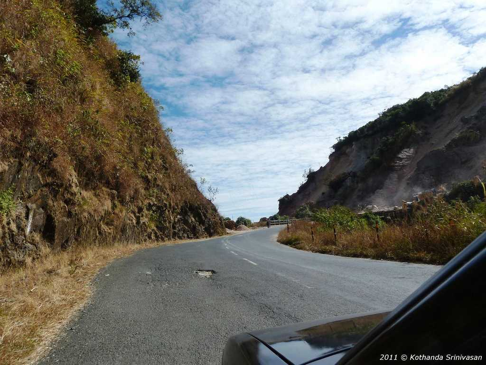
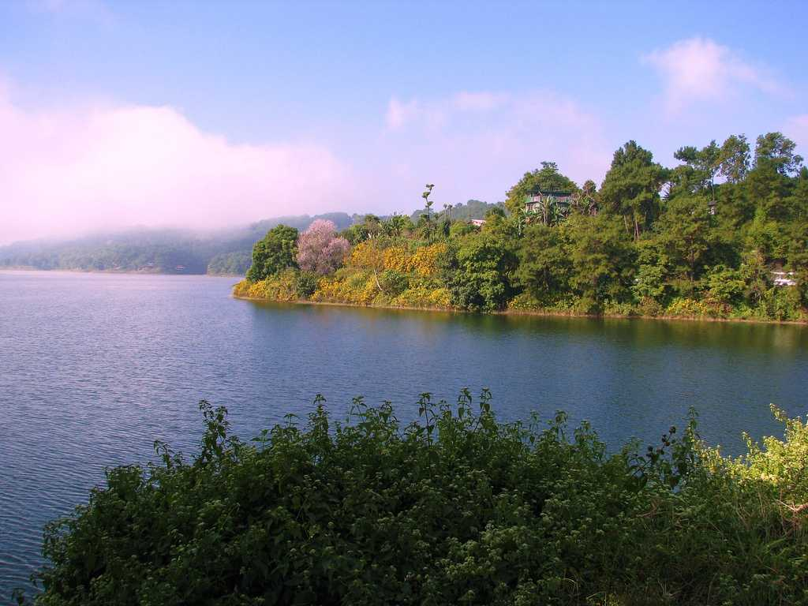
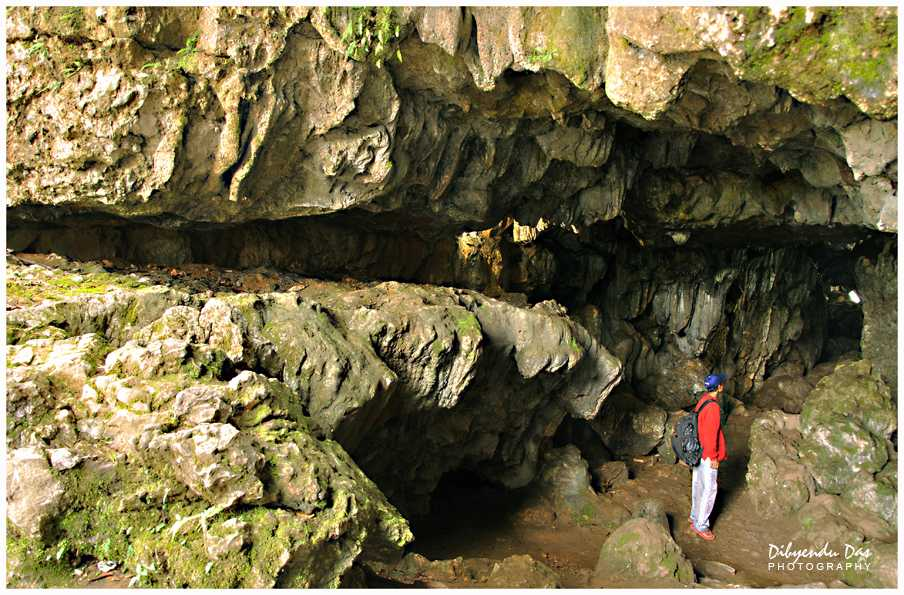
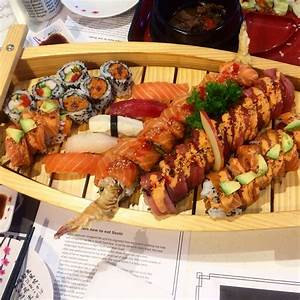
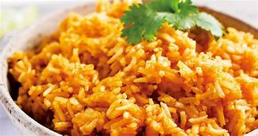
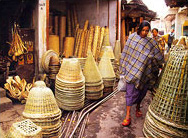
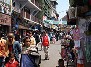

The Mawlynnong Village in Meghalaya has been consecutively voted as Asia's cleanest village and is one of places the to visit in Meghalaya
It is hard to spot even a single piece of straw or dusty roads here. The roads seem to be freshly laid and the village stands out distinctively for housing some of the rarest natural wonders of north east, like the Mawlynnong waterfall, which is a sight to behold, pushing its way through lush vegetation and descending into clear waters below
The live root bridge here (Not to be confused with the Double Decker Bridge in Cherapunjee) is the major attraction for all the visitors while the boulders here supported by nothing but pint sized stones, are a mystery for archaeological travelers who come here
If you plan to visit Umiam Lake in the winter time, from October to February, you'll be dumbfounded by its beauty.
If you plan to visit it in the summer months of May to July, you won't believe it's the same lake. Located in Nongpoh, Meghalaya The Umiam Lake is basically made from the reservoir built due to the dam here.
The lake is the chief source of water supply to the city of Shillong. During the winter months, the lake fills up with water that gives it an unbelievably picturesque beauty.
Mawsmai Cave in Meghalaya has a bit of a reputation among travelers. The place is eerily dark and has cramped and narrow paths entwined with each other, and to add some more thrill into the idea of a cave pitch black in broad daylight, there is just one entry and exit point.
Funnily enough, it might sound daunting to take your shoes off while entering the cave, but it's one advice you can follow with closed eyes. Or choose to carry and change of clothes and footwear.
This Cave in Meghalaya is what many explorers would call a eerie experience from the face of it, but well worth the tour anyway.
When you talk useless things to someone, they usually ask you not to eat their brains.
Doh Khlieh, is a delicious delicacy that comprises of pig brains cooked in curry and eaten with Indian bread.
Doh Khlieh is also cooked as a salad with steamed pork, pig brain and onions

Fish is widely eaten in the Northeastern India.
Nahkham that tastes pungent to the extent of being called one of the extreme foods of Garo tribe that stinks
The Garo tribes are believed to have migrated from Tibet around 400 years ago and settled in this part of India.
In Khasi language, ‘Ja’ means rice and ‘Doh’ means meat. While most of the Khasi food involves some or the other form of meat, vegetables generally take a back seat and are only consumed as salads.
Most of the tourists opt for the Jadoh that is cooked in pork fat itself.
The locals also enjoy eating ‘Jadoh snam’ that is cooked in blood. Jadoh for a Khasi is like biryani for a North Indian, with rice cooked with meat.
Also known as 'Barabazar' is one of the oldest and largest traditional markets and trade centres in the whole of northeast India, Iewduh was originally located in the capital of Hima Shillong-Nongkseh but was later shifted to the present site.
The hub of trade and commerce, where most of the shopkeepers are women, it comes under the direct management of the Syiem of Mylliem. Certain rituals are performed every year within the market area known as "Khlieh Iew" where huge monoliths are erected.
Location: East Khasi Hills District, Shillong
The more modern market has a number of hotels, multi cuisine restaurants and shops that cater to every need and fancy, and is a popular place where people congregate in the evenings.
